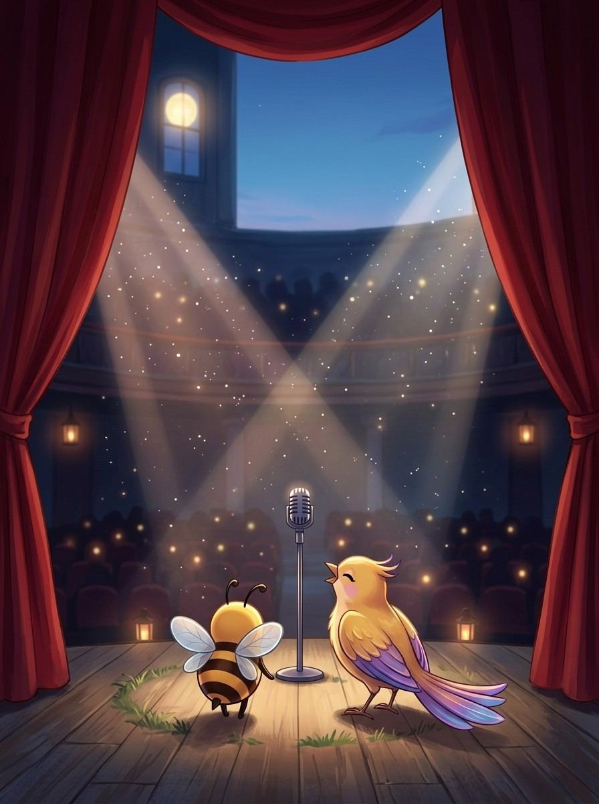
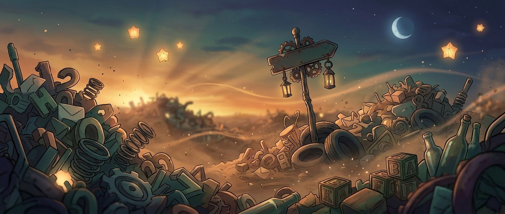

240 lines worth keeping — and what they mean for spellers
12 chapters240 practice wordsquizzes & puzzles

WELCOME TO
The Big Stage
The Big Stage, house lights down. Two hundred and forty voices worth hearing.
Bizzing Bee · Say It Like a Champion1
Say It Like a ChampionHow this book works
Borrow a giant's voice.
I'm Melody. Some sentences outlive the person who said them. Here are two hundred and forty — and under each, what it means when YOU'RE at the microphone.
1
One theme at a time
Twelve themes, twenty lines each. Courage before a bee. Humor after a hard one.
2
Find your line
One of these will feel written for you. Mark it. It’s yours now.
3
Play who-said-it
The match rounds test whether you were really listening.
4
Write your own
Every third theme ends with blank lines. Champions get quoted too, eventually.
Bizzing Bee · Say It Like a Champion2
Theme 1 of 12
Keep Going
For the round after the round you almost lost.
“Patience can cook a stone.”
— African Proverb, a traditional saying
Bizzing Bee · Say It Like a Champion3
Say It Like a ChampionKeep Going
“
Every path has its puddle.
— English Proverb, a traditional saying
🐝 Every journey has small difficulties along the way.
“
Many a little makes a lot.
— Scottish Proverb, a traditional saying
🐝 Lots of small amounts add up to a large one.
“
Step by step, one goes far.
— French Proverb, a traditional saying
🐝 Steady progress takes you a long way.
“
Water always finds its way.
— Brazilian Proverb, a traditional saying
🐝 With patience, you can always find a path to your goal.
“
Never, never, never give up.
— Winston Churchill, British prime minister
🐝 No matter how hard things get, keep going and do not quit.
“
Small strokes fell big oaks.
— German proverb, Traditional wisdom from Germany
🐝 Even the biggest challenges can be beaten with steady, repeated effort.
Bizzing Bee · Say It Like a Champion4
Say It Like a ChampionKeep Going
“
Even monkeys fall from trees.
— Japanese proverb, traditional saying
🐝 Even experts make mistakes, so don't be too hard on yourself.
“
A stumble may prevent a fall.
— Thomas Fuller, English writer
🐝 A small slip can teach you and save you from a bigger fall.
“
Slow but steady wins the day.
— Aesop's Fable Proverb, a traditional saying
🐝 Patient, steady effort beats fast but careless work.
“
Drops of water make an ocean.
— Hindi proverb (India), Traditional wisdom from India
🐝 Small efforts add up to something huge. Every little bit matters.
“
Slow and steady wins the race.
— Aesop, ancient storyteller
🐝 Working steadily and patiently beats rushing.
“
Patience is the key to relief.
— Arabic Proverb, a traditional saying
🐝 Being patient helps you get through hard times.

Bizzing Bee · Say It Like a Champion5
Say It Like a ChampionKeep Going
“
Hope is the last thing to die.
— Italian proverb, Traditional wisdom from Italy
🐝 Even in hard times, hold on to hope. It keeps you going.
“
Drop by drop, a lake is formed.
— Turkish Proverb, a traditional saying
🐝 Small contributions build up to something large.
“
Little by little, silk is spun.
— Persian Proverb, a traditional saying
🐝 Beautiful things are made slowly and patiently.
“
Adventure is just bad planning.
— Roald Amundsen, polar explorer
🐝 He joked that good preparation prevents scary surprises.
“
You have to fight till the end.
— Viswanathan Anand, Chess grandmaster
🐝 Keep trying right up to the finish.
“
Little by little, one walks far.
— Peruvian proverb, traditional saying
🐝 Small steps taken again and again cover a long distance.
Bizzing Bee · Say It Like a Champion6
Say It Like a ChampionKeep Going
“
Hope is the last thing you lose.
— Spanish Proverb, a traditional saying
🐝 Even in hard times, keep hoping.
Bizzing Bee · Say It Like a Champion7
Theme 2 of 12
Be Brave
For the walk to the microphone.
“Freedom lies in being bold.”
— Robert Frost, poet
Bizzing Bee · Say It Like a Champion8
Say It Like a ChampionBe Brave
“
Age considers; youth ventures.
— Rabindranath Tagore, Indian poet, Nobel laureate
🐝 It means the young are bold to try, while the old are careful.
“
Optimism is true moral courage.
— Ernest Shackleton, polar explorer
🐝 Staying hopeful in hard times is a brave and good thing.
“
Courage is grace under pressure.
— Ernest Hemingway, American author
🐝 Being brave means staying calm and kind when things are tough.
“
Adventure is worthwhile in itself.
— Amelia Earhart, pioneering pilot
🐝 Trying bold new things is valuable all on its own.
“
Do the things you are afraid to do.
— Louisa May Alcott, author of Little Women
🐝 It means courage grows when you face your fears.
“
Strength is life, weakness is death.
— Swami Vivekananda, Indian monk and teacher
🐝 Being strong in spirit keeps you truly alive.
Bizzing Bee · Say It Like a Champion9
Say It Like a ChampionBe Brave
“
Forgiveness is a virtue of the brave.
— Indira Gandhi, Former Indian Prime Minister
🐝 It takes real courage to forgive.
“
You should not be afraid of failures.
— MS Dhoni, Cricket captain
🐝 Failing is just part of learning.
“
It's kind of fun to do the impossible.
— Walt Disney, animator and film maker
🐝 Trying things everyone says can't be done can be exciting.
“
I am not afraid. I was born to do this.
— Joan of Arc, French heroine
🐝 She faced her fears believing she was meant for her mission.
“
The gods help them that help themselves.
— Aesop, ancient Greek teller of animal fables
🐝 From Hercules and the Wagoner: try hard yourself, and help will follow.
“
The dogs bark, but the caravan moves on.
— Arabic proverb, Traditional wisdom from the Arab world
🐝 Keep going toward your goal even when others complain or criticize you.
Bizzing Bee · Say It Like a Champion10
Say It Like a ChampionBe Brave
“
Fear is a reaction. Courage is a decision.
— Winston Churchill, British prime minister
🐝 Feeling afraid happens on its own, but being brave is a choice.
“
This above all: to thine own self be true.
— William Shakespeare, playwright
🐝 It means always be honest and true to who you really are.
“
It's not enough to want. You have to work.
— Katherine Paterson, author of Bridge to Terabithia
🐝 It means wishing is not enough; you must act.
“
You must act as if it is impossible to fail.
— Ashanti proverb (Ghana), Wisdom from the Ashanti people
🐝 Believe strongly in yourself and try boldly, as if you cannot lose.
“
Whatever it is you're scared of doing, do it.
— Neil Gaiman, author
🐝 It means be brave and face what frightens you.
“
Just go out there and do what you have to do.
— Venus Williams, Tennis champion
🐝 Sometimes you just need to begin and try.
Bizzing Bee · Say It Like a Champion11
Say It Like a ChampionBe Brave
“
A well-drawn tiger has no fear of a real one.
— Korean proverb, Traditional wisdom from Korea
🐝 When you prepare well, you can face even scary challenges with confidence.
Bizzing Bee · Say It Like a Champion12
Theme 3 of 12
Do the Work
For the days the list looks too long.
“He who rests grows rusty.”
— German Proverb, a traditional saying
Bizzing Bee · Say It Like a Champion13
Say It Like a ChampionDo the Work
“
Go and wake up your luck.
— Persian proverb, Traditional wisdom from Persia
🐝 Don't just wait for good things. Take action and make your own good fortune.
“
Starting is half the task.
— Korean Proverb, a traditional saying
🐝 Just beginning gets you a big part of the way there.
“
A gaun foot's aye getting.
— Scottish proverb, Traditional wisdom from Scotland
🐝 A person who keeps busy and active always ends up gaining something.
“
Cost goes before the profit.
— Dutch Proverb, a traditional saying
🐝 You usually have to put in effort before you see rewards.
“
A field will not sow itself.
— Belarusian Proverb, a traditional saying
🐝 Good results come only when you put in the effort.
“
Effort is greater than fate.
— Marathi Proverb, a traditional saying
🐝 Your hard work can shape your life more than luck can.
Bizzing Bee · Say It Like a Champion14
Say It Like a ChampionDo the Work
“
The lazy person works twice.
— Spanish proverb, Traditional wisdom from Spain
🐝 If you rush or don't do a job right the first time, you'll have to do it again.
“
Nothing will come of nothing.
— William Shakespeare, playwright
🐝 You get nothing if you put in nothing.
“
Strike while the iron is hot.
— English Proverb, a traditional saying
🐝 Act quickly while the moment is right.
“
The lazy person works double.
— Spanish Proverb, a traditional saying
🐝 Avoiding work often means you have to redo it later.
“
A roaring lion kills no game.
— Ugandan Proverb, a traditional saying
🐝 Just making noise won't get the job done; you have to act.
“
Success is earned, not given.
— Yuna Kim, Olympic figure skater
🐝 You earn success through effort.
Bizzing Bee · Say It Like a Champion15
Say It Like a ChampionDo the Work
“
A running horse needs no spur.
— Persian Proverb, a traditional saying
🐝 Someone already trying hard needs no extra push.
“
Life is found in the practice.
— Hawaiian Proverb, a traditional saying
🐝 You grow and improve by actually doing the work.
“
The lazy ox drinks dirty water.
— Portuguese Proverb, a traditional saying
🐝 Those who don't put in effort end up with the leftovers.
“
He who wants blue must earn it.
— Latin American proverb, Traditional wisdom from Latin America
🐝 If you want something wonderful, you have to work to earn it.
“
Nothing worth having comes easy.
— Theodore Roosevelt, US president
🐝 The best things in life take real effort to earn.
“
Nothing will work unless you do.
— Maya Angelou, American poet
🐝 Plans and dreams only come true when you put in the effort.
Bizzing Bee · Say It Like a Champion16
Say It Like a ChampionDo the Work
“
Do small things with great love.
— Mother Teresa, missionary and helper
🐝 Even tiny helpful acts matter when done with a caring heart.
Bizzing Bee · Say It Like a Champion17
Say It Like a ChampionMatch round
Who said it?
The lines
1. “Where the mind is without fear and the head is held high.”
2. “He who wants blue must earn it.”
3. “A drop of water can pierce a stone.”
4. “Nothing ever comes to one that is worth having except as a result of ha…”
5. “You can achieve anything if you practice and work hard.”
6. “The most courageous act is still to think for yourself. Aloud.”
7. “Happiness lies in the joy of achievement and the thrill of creative eff…”
8. “Don't look back. Something might be gaining on you.”
The voices
A. Lang Lang
B. Hindi Proverb
C. Booker T. Washington
D. Satchel Paige
E. Franklin D. Roosevelt
F. Latin American proverb
G. Rabindranath Tagore
H. Coco Chanel
Your turn
Write a line of your own. Sign it. Date it. Future-you will want proof.
Bizzing Bee · Say It Like a Champion18
Theme 4 of 12
Back Yourself
For the voice that says you can’t.
“Stay hungry, stay foolish.”
— Steve Jobs, Apple co-founder
Bizzing Bee · Say It Like a Champion19
Say It Like a ChampionBack Yourself
“
Light tomorrow with today.
— Elizabeth Barrett Browning, poet
🐝 It means today's efforts brighten your future.
“
What you seek is seeking you.
— Rumi, poet
🐝 The dreams you chase are reaching back toward you too.
“
We are what we believe we are.
— C.S. Lewis, author of Narnia
🐝 It means our beliefs about ourselves shape who we become.
“
If I can do it, you can do it.
— Terry Fox, Marathon of Hope runner
🐝 If one person can, so can you.
“
Where there's life there's hope.
— J.R.R. Tolkien, author of The Hobbit
🐝 It means as long as you are alive, you can hope for better.
“
I exist as I am, that is enough.
— Walt Whitman, poet
🐝 It means you are enough just as you are.
Bizzing Bee · Say It Like a Champion20
Say It Like a ChampionBack Yourself
“
Where there's hope, there's life.
— Anne Frank, diarist
🐝 It means hope keeps us going.
“
Where there is life, there is hope.
— Stephen Hawking, physicist
🐝 As long as you are alive, there is always reason to hope.
“
The world needs all kinds of minds.
— Temple Grandin, scientist and inventor
🐝 Every kind of mind has something valuable to offer.
“
We are not born for ourselves alone.
— Cicero, Roman statesman
🐝 We are meant to help others, not just ourselves.
“
Wherever you are is the entry point.
— Kabir, Indian poet and saint
🐝 It means you can begin your journey right where you are.
“
They can because they think they can.
— Virgil, Roman poet
🐝 People succeed because they believe they can.
Bizzing Bee · Say It Like a Champion21
Say It Like a ChampionBack Yourself
“
You are capable of more than you know.
— E. O. Wilson, biologist
🐝 You can do far more than you might imagine.
“
Only you can limit your possibilities.
— Peggy Whitson, Record-setting astronaut
🐝 You decide how far you can go.
“
If you don't back yourself, nobody will.
— Virat Kohli, Cricket star
🐝 Believe in yourself first.
“
I don't need easy. I just need possible.
— Bethany Hamilton, Surfer
🐝 You don't need easy, just a chance.
“
It's not bragging if you can back it up.
— Muhammad Ali, Boxing champion
🐝 Confidence grows from real practice.
“
Just be yourself, there is no one better.
— Taylor Swift, singer and songwriter
🐝 Being yourself is the best thing you can be.
Bizzing Bee · Say It Like a Champion22
Say It Like a ChampionBack Yourself
“
The greatest sin is to think yourself weak.
— Swami Vivekananda, Indian monk and teacher
🐝 Never convince yourself that you are weak or unable.
Bizzing Bee · Say It Like a Champion23
Theme 5 of 12
Dream Big
For the trophy you can already see.
“What we think, we become.”
— Buddha, Ancient teacher
Bizzing Bee · Say It Like a Champion24
Say It Like a ChampionDream Big
“
Oh, the places you'll go!
— Dr. Seuss, children's author
🐝 It means an exciting world of adventures awaits you.
“
Explore. Dream. Discover.
— Mark Twain, American humorist
🐝 Three little words to live by.
“
Dream big and dare to fail.
— Norman Vaughan, American explorer
🐝 Aim for something great, and do not be afraid to make mistakes along the way.
“
Rome wasn't built in a day.
— Proverb, Traditional proverb
🐝 Great things take time, so be patient with your dreams.
“
If you are a dreamer, come in.
— Shel Silverstein, poet and children's author
🐝 It welcomes dreamers to imagine freely.
“
Little strokes fell great oaks.
— Benjamin Franklin, American statesman and inventor
🐝 Small, steady efforts can accomplish big things.
Bizzing Bee · Say It Like a Champion25
Say It Like a ChampionDream Big
“
Dreams don't work unless you do.
— John C. Maxwell, American author and speaker
🐝 Your dreams need your effort to grow; you have to do the work to see them come true.
“
A goal is a dream with a deadline.
— Napoleon Hill, American author
🐝 A dream becomes a goal when you decide the time you will reach it by.
“
Dare to dream, then decide to fly.
— Author unknown, Popular saying
🐝 Let yourself dream boldly, then take off toward that dream.
“
A dream is a wish your heart makes.
— Jerry Livingston, American songwriter
🐝 Dreams are the gentle wishes that come from deep in your heart.
“
Dreams are made possible if you try.
— Terry Fox, Marathon of Hope runner
🐝 Trying is the first step to any dream.
“
Follow your dreams, they know the way.
— Kobi Yamada, American author
🐝 Trust your dreams to guide you, because they point toward what you love.
Bizzing Bee · Say It Like a Champion26
Say It Like a ChampionDream Big
“
Nothing happens unless first we dream.
— Carl Sandburg, American poet
🐝 Every wonderful thing begins with someone daring to dream it.
“
Let me not seem to have lived in vain.
— Tycho Brahe, astronomer
🐝 He hoped his life's work would truly matter.
“
The sky is not the limit. Your mind is.
— Marilyn Monroe, American actress
🐝 Your dreams can go beyond anything, because your imagination has no ceiling.
“
A goal properly set is halfway reached.
— Zig Ziglar, American speaker
🐝 Knowing exactly what you want puts you well on your way there.
“
Every great dream begins with a dreamer.
— Harriet Tubman, American abolitionist
🐝 Big, wonderful changes always start with one person who dares to dream.
“
Wherever you go, go with all your heart.
— Confucius, Ancient Chinese teacher
🐝 Follow your path fully, giving it all your love and effort.
Bizzing Bee · Say It Like a Champion27
Say It Like a ChampionDream Big
“
Every noble work is at first impossible.
— Thomas Carlyle, Scottish writer
🐝 Great dreams often look impossible until someone bravely makes them happen.
Bizzing Bee · Say It Like a Champion28
Theme 6 of 12
Stay Curious
For the words you haven’t met yet.
“The days are just packed!”
— Bill Watterson, creator of Calvin and Hobbes
Bizzing Bee · Say It Like a Champion29
Say It Like a ChampionStay Curious
“
Doubt grows with knowledge.
— Johann Wolfgang von Goethe, German writer
🐝 The more you learn, the more good questions you find.
“
Doubt is the origin of wisdom.
— Rene Descartes, philosopher and mathematician
🐝 Questioning things is where wisdom begins.
“
Doubt is the key to knowledge.
— Persian proverb, Traditional wisdom from Persia
🐝 Asking questions and being curious is how you learn new things.
“
Everything is physics and math.
— Katherine Johnson, NASA mathematician
🐝 Math and science are everywhere around us.
“
I did not think; I investigated.
— Wilhelm Rontgen, physicist
🐝 Instead of just guessing, he explored and tested to discover X-rays.
“
All men by nature desire to know.
— Aristotle, Greek philosopher
🐝 Everyone is naturally curious and wants to learn.
Bizzing Bee · Say It Like a Champion30
Say It Like a ChampionStay Curious
“
Doubt is the father of invention.
— Galileo Galilei, astronomer
🐝 Questioning and doubting can lead to new inventions.
“
Wonder is the beginning of wisdom.
— Socrates, Greek philosopher
🐝 Being amazed by the world is the first step to becoming wise.
“
The cure for boredom is curiosity.
— Ellen Parr, writer
🐝 When you feel bored, being curious wakes up your mind again.
“
Curiosity is the lust of the mind.
— Thomas Hobbes, English philosopher
🐝 The mind craves new knowledge the way we crave good things.
“
The night sky belongs to everyone.
— Chanda Prescod-Weinstein, physicist
🐝 The stars are there for every person to enjoy and wonder at.
“
Wonder is the desire for knowledge.
— Thomas Aquinas, medieval philosopher
🐝 Feeling wonder is really the wish to understand.
Bizzing Bee · Say It Like a Champion31
Say It Like a ChampionStay Curious
“
Imagination is the true magic carpet.
— Norman Vincent Peale, author and minister
🐝 Imagination can carry you anywhere, like a flying carpet.
“
Play is the highest form of research.
— Albert Einstein, Physicist
🐝 Playing is a great way to learn.
“
Curiosity is the engine of achievement.
— Ken Robinson, education expert
🐝 Wanting to know things drives you to accomplish great things.
“
Curiosity is one door to the marvelous.
— Vera Nazarian, author
🐝 Being curious opens the way to amazing discoveries.
“
Attention is the beginning of devotion.
— Mary Oliver, Nature poet
🐝 Really paying attention is how caring begins.
“
Be curious. Read widely. Try new things.
— Aaron Swartz, programmer and writer
🐝 Curiosity and wide reading are what make people smart.
Bizzing Bee · Say It Like a Champion32
Say It Like a ChampionStay Curious
“
The mountains are calling and I must go.
— John Muir, naturalist
🐝 The wonder of nature pulls explorers outdoors.
Bizzing Bee · Say It Like a Champion33
Say It Like a ChampionMatch round
Who said it?
The lines
1. “Only you can be the one to set your goals and realize your own potentia…”
2. “If your dreams do not scare you, they are not big enough.”
3. “There are no seven wonders of the world in the eyes of a child. There a…”
4. “Do not let what you cannot do interfere with what you can do.”
5. “Imagination is the highest kite one can fly.”
6. “If society will not admit of woman's free development, then society mus…”
7. “You have to dream before your dreams can come true.”
8. “A ship in port is safe, but that's not what ships are built for.”
The voices
A. John Wooden
B. Lauren Bacall
C. Ellen Johnson Sirleaf
D. Grace Hopper
E. Ellen Ochoa
F. Elizabeth Blackwell
G. A. P. J. Abdul Kalam
H. Walt Streightiff
Your turn
Write a line of your own. Sign it. Date it. Future-you will want proof.
Bizzing Bee · Say It Like a Champion34
Theme 7 of 12
Love Learning
For every list that made you better.
“Kid, you'll move mountains.”
— Dr. Seuss, children's author
Bizzing Bee · Say It Like a Champion35
Say It Like a ChampionLove Learning
“
Blind is a bookless person.
— Icelandic Proverb, a traditional saying
🐝 Reading opens your eyes to the whole world.
“
Rome was not built in a day.
— French proverb, traditional saying
🐝 Great things take time and patience to achieve.
“
The wise store up knowledge.
— Hebrew Proverb, a traditional saying
🐝 Smart people keep gathering and saving what they learn.
“
Learning expands great souls.
— Persian proverb, traditional saying
🐝 Learning makes a person's spirit grow bigger.
“
Practice is the best teacher.
— Latin Proverb, a traditional saying
🐝 You learn the most by actually doing something.
“
Becoming is better than being.
— Carol Dweck, Psychologist
🐝 Growing is even better than being finished.
Bizzing Bee · Say It Like a Champion36
Say It Like a ChampionLove Learning
“
Knowledge is better than riches.
— Cameroonian Proverb, a traditional saying
🐝 What you know is worth more than money.
“
When you know better, do better.
— Maya Angelou, Poet and author
🐝 As you learn more, make kinder choices.
“
New little bird, new little song.
— Mexican Proverb, a traditional saying
🐝 New situations bring new things to learn and enjoy.
“
The tongue will lead you to Kyiv.
— Ukrainian Proverb, a traditional saying
🐝 Being brave enough to ask questions helps you find your way.
“
Repetition teaches even a donkey.
— Arabic Proverb, a traditional saying
🐝 Practicing something over and over helps anyone learn it.
“
Whoever has knowledge is powerful.
— Persian Proverb, a traditional saying
🐝 The more you learn, the more you can do in the world.
Bizzing Bee · Say It Like a Champion37
Say It Like a ChampionLove Learning
“
Bend the bamboo while it is young.
— Filipino Proverb, a traditional saying
🐝 It's easiest to learn good habits while you are still young.
“
There is no royal road to geometry.
— Euclid, mathematician
🐝 There is no shortcut to learning math; everyone must work through it.
“
Repetition is the mother of wisdom.
— Slovak Proverb, a traditional saying
🐝 Practicing something again and again helps you truly learn it.
“
I never lose. I either win or learn.
— Nelson Mandela, South African leader
🐝 Even a loss can teach you something helpful.
“
There is no shortcut to achievement.
— George Washington Carver, scientist and inventor
🐝 Real success comes from steady effort.
“
Where there is a will, there is a way.
— English proverb, traditional saying
🐝 If you truly want something, you can find a way to do it.
Bizzing Bee · Say It Like a Champion38
Say It Like a ChampionLove Learning
“
Anyone who keeps learning stays young.
— Henry Ford, inventor and engineer
🐝 Always learning keeps your mind young and fresh.
Bizzing Bee · Say It Like a Champion39
Theme 8 of 12
Imagine It
For seeing the word before you spell it.
“Great minds discuss ideas.”
— Eleanor Roosevelt, American humanitarian
Bizzing Bee · Say It Like a Champion40
Say It Like a ChampionImagine It
“
Let the wild rumpus start!
— Maurice Sendak, author of Where the Wild Things Are
🐝 It is a joyful call to let imagination run free.
“
Beauty will save the world.
— Fyodor Dostoevsky, author
🐝 It means beauty and goodness can change the world.
“
Imagination rules the world.
— Napoleon Bonaparte, French leader
🐝 New ideas born in the imagination shape everything around us.
“
Imagination grows by exercise.
— W. Somerset Maugham, British author
🐝 The more you use your imagination, the stronger and richer it becomes.
“
A day dreamed is never wasted.
— Author unknown, Popular saying
🐝 Time spent imagining is never time lost.
“
Imagination is the air of mind.
— Philip James Bailey, English poet
🐝 Imagination is as important to your mind as air is to your body.
Bizzing Bee · Say It Like a Champion41
Say It Like a ChampionImagine It
“
Imagination decides everything.
— Blaise Pascal, French thinker
🐝 How you imagine things can shape everything you do.
“
Wonder is the seed of knowledge.
— Francis Bacon, English philosopher
🐝 Feeling amazed and curious is where learning begins.
“
Only you can control your future.
— Dr. Seuss, American author
🐝 You have the power to imagine and shape the days ahead.
“
You can make anything by writing.
— C.S. Lewis, author of Narnia
🐝 With writing, you can create absolutely anything.
“
Lord, what fools these mortals be!
— William Shakespeare, England's famous playwright and poet
🐝 A mischievous fairy laughs at how silly people can act.
“
Imagination is the eye of the soul.
— Joseph Joubert, French writer
🐝 Your imagination lets your heart see beautiful things others might miss.
Bizzing Bee · Say It Like a Champion42
Say It Like a ChampionImagine It
“
I am a part of all that I have met.
— Alfred Tennyson, English poet
🐝 Everything you experience becomes part of who you are.
“
Don't gobblefunk around with words.
— Roald Dahl, author of The BFG
🐝 It is a playful reminder to say what you really mean.
“
An idea is salvation by imagination.
— Frank Lloyd Wright, American architect
🐝 A fresh idea, born from imagination, can make everything better.
“
Courage is found in unlikely places.
— J. R. R. Tolkien, British author
🐝 Bravery can appear in the most surprising people, including you.
“
What are men to rocks and mountains?
— Jane Austen, author of Pride and Prejudice
🐝 It is a joyful line about loving nature and travel.
“
Write hard and clear about what hurts.
— Ernest Hemingway, American author
🐝 Honest writing comes from real feelings.
Bizzing Bee · Say It Like a Champion43
Say It Like a ChampionImagine It
“
Improving things comes naturally to me.
— Hedy Lamarr, inventor and actress
🐝 She naturally loved finding ways to make things better.
Bizzing Bee · Say It Like a Champion44
Theme 9 of 12
Make Things
For building your own way to remember.
“Creativity takes courage.”
— Henri Matisse, French artist
Bizzing Bee · Say It Like a Champion45
Say It Like a ChampionMake Things
“
Where words fail, music speaks.
— Hans Christian Andersen, Danish author
🐝 When it is hard to explain feelings, music can express them for you.
“
Everything begins with an idea.
— Earl Nightingale, American motivational author
🐝 Every wonderful creation starts from a single idea.
“
Every artist was first an amateur.
— Ralph Waldo Emerson, American essayist
🐝 Everyone starts as a beginner, so keep practicing your art.
“
Music is the shorthand of emotion.
— Leo Tolstoy, Russian author
🐝 Music is a quick, beautiful way to share how we feel.
“
You fail only if you stop writing.
— Ray Bradbury, American author
🐝 As long as you keep creating, you keep growing and succeeding.
“
Write what should not be forgotten.
— Isabel Allende, Chilean-American author
🐝 Use your writing to keep wonderful stories and memories alive.
Bizzing Bee · Say It Like a Champion46
Say It Like a ChampionMake Things
“
Talent is a flame. Genius is a fire.
— Bernard Williams, British philosopher
🐝 Skill is a spark, but passion and practice make it blaze bright.
“
Design is intelligence made visible.
— Alina Wheeler, American author
🐝 Good design shows clever thinking in a form you can see.
“
Just play. Have fun. Enjoy the game.
— Michael Jordan, American basketball player
🐝 Enjoying what you do makes creating even better.
“
Creativity is contagious. Pass it on.
— Albert Einstein, German-born physicist
🐝 When you share your creative spirit, it inspires others to create too.
“
Creativity is just connecting things.
— Steve Jobs, American inventor and entrepreneur
🐝 Being creative often means linking ideas together in new ways.
“
Every good painter paints what he is.
— Jackson Pollock, American artist
🐝 Your art naturally shows who you are inside.
Bizzing Bee · Say It Like a Champion47
Say It Like a ChampionMake Things
“
A line is a dot that went for a walk.
— Paul Klee, Swiss-German artist
🐝 Even a simple drawing can start with one playful, creative move.
“
Do not fear mistakes. There are none.
— Miles Davis, American musician
🐝 In creating, so-called mistakes can become happy surprises.
“
Art is never finished, only abandoned.
— Leonardo da Vinci, Italian artist and inventor
🐝 You can always keep improving your art; there is always more to explore.
“
To create one's own world takes courage.
— Georgia O'Keeffe, American artist
🐝 Making something uniquely yours takes bravery, and you can do it.
“
Dance is the hidden language of the soul.
— Martha Graham, American dancer
🐝 Dancing lets you share feelings without any words.
“
Creativity comes from a conflict of ideas.
— Donatella Versace, Italian designer
🐝 New ideas often spark when different thoughts meet.
Bizzing Bee · Say It Like a Champion48
Say It Like a ChampionMake Things
“
You can't do it unless you can imagine it.
— George Lucas, American filmmaker
🐝 You have to picture something before you can create it.
Bizzing Bee · Say It Like a Champion49
Say It Like a ChampionMatch round
Who said it?
The lines
1. “Give me knowledge, and I will give you wings.”
2. “Creativity is thinking up new things. Innovation is doing new things.”
3. “Do a little more each day than you think you possibly can.”
4. “The best thing about being a writer is that you never grow old inside.”
5. “Who is wise? The one who learns from everyone.”
6. “Learn as much as you can while you are young, since life becomes too bu…”
7. “A day without learning is a day wasted.”
8. “Don't let schooling interfere with your education.”
The voices
A. Chinese Proverb
B. Theodore Levitt
C. Mark Twain
D. Hebrew Proverb
E. Jewish proverb
F. Dana Stewart Scott
G. Ruskin Bond
H. Lowell Thomas
Your turn
Write a line of your own. Sign it. Date it. Future-you will want proof.
Bizzing Bee · Say It Like a Champion50
Theme 10 of 12
Be Kind
For the speller who just went out.
“Kindness is never wasted.”
— Aesop's Fable Proverb, a traditional saying
Bizzing Bee · Say It Like a Champion51
Say It Like a ChampionBe Kind
“
Kindness pays for itself.
— Finnish Proverb, a traditional saying
🐝 Being kind is always worth it in the end.
“
We rise by lifting others.
— Robert Green Ingersoll, American orator and lawyer
🐝 Helping other people up lifts you higher too.
“
A good deed is never lost.
— Spanish Proverb, a traditional saying
🐝 Every kind act matters, even if you don't see the result.
“
Be a blessing to somebody.
— Maya Angelou, poet and author
🐝 It means try to bring good into someone's life.
“
Work is love made visible.
— Kahlil Gibran, poet and artist
🐝 Doing your work well is a way of showing love.
“
Love is a great beautifier.
— Louisa May Alcott, author of Little Women
🐝 It means love makes people and life more beautiful.
Bizzing Bee · Say It Like a Champion52
Say It Like a ChampionBe Kind
“
A kindness is never wasted.
— Aesop, ancient Greek teller of animal fables
🐝 From the Ant and the Dove: a good deed always matters and comes back around.
“
Bread and salt make friends.
— Georgian Proverb, a traditional saying
🐝 Sharing food and kindness turns strangers into friends.
“
The hand that gives, gathers.
— Welsh Proverb, a traditional saying
🐝 When you give to others, good things come back to you.
“
When they go low, we go high.
— Michelle Obama, Former US First Lady
🐝 Answer meanness with your best self.
“
Gentle words open iron gates.
— Bulgarian Proverb, a traditional saying
🐝 Kindness can win over even the hardest hearts.
“
A closed hand cannot receive.
— Chilean Proverb, a traditional saying
🐝 You have to be open and giving to receive good things too.
Bizzing Bee · Say It Like a Champion53
Say It Like a ChampionBe Kind
“
The heart that gives, gathers.
— Marianne Moore, American poet
🐝 A giving heart ends up richer, not poorer.
“
The whole world is one family.
— Sanskrit Proverb, a traditional saying
🐝 We should treat all people with care, like family.
“
We are made kind by being kind.
— Eric Hoffer, American philosopher
🐝 Practicing kindness is what makes us kind.
“
Do good and don't look at whom.
— Latin American Proverb, a traditional saying
🐝 Help others without worrying about who they are.
“
A soft answer turns away anger.
— Hebrew Proverb, a traditional saying
🐝 Gentle words can calm an angry person.
“
He who brings kola brings life.
— Igbo Proverb, a traditional saying
🐝 A welcoming gift or gesture shows care and friendship.
Bizzing Bee · Say It Like a Champion54
Say It Like a ChampionBe Kind
“
Good deeds are the best prayer.
— Greek proverb, Traditional wisdom from Greece
🐝 Doing kind things for others is one of the most meaningful things you can do.
Bizzing Bee · Say It Like a Champion55
Theme 11 of 12
Bring Friends
For the people cheering in row three.
“A friend is a second self.”
— Aristotle, Ancient Greek philosopher
Bizzing Bee · Say It Like a Champion56
Say It Like a ChampionBring Friends
“
A friend loves at all times.
— Book of Proverbs, Ancient book of wisdom
🐝 A true friend loves you no matter what.
“
Two people shorten the road.
— Irish proverb, Traditional wisdom from Ireland
🐝 A journey feels quicker and nicer when you share it with a friend.
“
A friend loveth at all times.
— King Solomon, proverb writer
🐝 It means true friends love you no matter what.
“
Friendship is the wine of life.
— Edward Young, English poet
🐝 Friendship makes life richer and sweeter.
“
When friends meet, hearts warm.
— Chinese Proverb, Traditional saying from China
🐝 Being with friends brings warmth and happiness.
“
Friendship is a sheltering tree.
— Samuel Taylor Coleridge, English poet
🐝 A friend gives you shade and protection like a big tree.
Bizzing Bee · Say It Like a Champion57
Say It Like a ChampionBring Friends
“
Friends are the sunshine of life.
— John Hay, American statesman and author
🐝 Friends bring warmth and brightness to your life.
“
Good fences make good neighbours.
— Robert Frost, American poet of woods and roads
🐝 An old saying: clear boundaries can help neighbors get along well.
“
Friends are the family you choose.
— Jess C. Scott, American author
🐝 Good friends can feel as close as family you picked yourself.
“
Life is nothing without friendship.
— Marcus Tullius Cicero, Roman statesman and writer
🐝 Without friends, life feels empty.
“
The absent are always in the wrong.
— French proverb, Traditional wisdom from France
🐝 Be present and speak up for yourself, and be fair to those who aren't there.
“
A friend is a gift you give yourself.
— Robert Louis Stevenson, Scottish author
🐝 Making a friend is a wonderful gift to your own life.
Bizzing Bee · Say It Like a Champion58
Say It Like a ChampionBring Friends
“
Friendship is Love without his wings.
— Lord Byron, English Romantic poet
🐝 Friendship is a gentle, lasting kind of love.
“
Friendship is one mind in two bodies.
— Mencius, Ancient Chinese philosopher
🐝 Close friends think and feel almost as one.
“
No man is an island, entire of itself.
— John Donne, poet
🐝 It means we are all connected to one another.
“
Hold a true friend with both your hands.
— Nigerian Proverb, Traditional saying from Nigeria
🐝 Cherish a real friend and never let them go.
“
He who walks with the wise becomes wise.
— Filipino proverb, Traditional wisdom from the Philippines
🐝 Spending time with good, wise people helps you become wise too.
“
Let there be spaces in your togetherness.
— Kahlil Gibran, poet and author of The Prophet
🐝 It means even close friends need a little space.
Bizzing Bee · Say It Like a Champion59
Say It Like a ChampionBring Friends
“
He who goes with the lame learns to limp.
— Italian proverb, Traditional wisdom from Italy
🐝 You pick up the habits of the people you spend time with, so choose good company.
Bizzing Bee · Say It Like a Champion60
Theme 12 of 12
Laugh a Little
For when the nerves need popping.
“Wit is educated insolence.”
— Aristotle, Ancient Greek philosopher
Bizzing Bee · Say It Like a Champion61
Say It Like a ChampionLaugh a Little
“
Laughter is inner jogging.
— Norman Cousins, American journalist
🐝 Laughing is like exercise for your insides.
“
Common sense is not so common.
— Voltaire, French Enlightenment writer
🐝 Sensible thinking is rarer than people think.
“
Two rights don't equal a left.
— Roald Dahl, author of The BFG
🐝 A goofy bit of BFG nonsense that makes you grin.
“
A joke is a very serious thing.
— Winston Churchill, British wartime leader
🐝 Humor can carry real importance.
“
Don't teach a crocodile to swim.
— Thai proverb, Traditional wisdom from Thailand
🐝 Don't try to teach an expert something they already know well.
“
It's like deja vu all over again.
— Yogi Berra, Baseball player and coach
🐝 A funny way to say something feels repeated.
Bizzing Bee · Say It Like a Champion62
Say It Like a ChampionLaugh a Little
“
Where hens cackle, there are eggs.
— Finnish proverb, Traditional wisdom from Finland
🐝 Where there's lots of activity and noise, something is usually being made.
“
Never miss a good chance to shut up.
— Will Rogers, Cowboy humorist and actor
🐝 Sometimes staying quiet is the smartest choice.
“
If called by a panther, don't anther.
— Ogden Nash, American poet of light verse
🐝 A goofy pun that's meant to make you groan and grin.
“
Life is hard. After all, it kills you.
— Katharine Hepburn, Legendary film actress
🐝 A wry joke about life's difficulties.
“
You cannot spoil porridge with butter.
— Russian proverb, Traditional wisdom from Russia
🐝 A little extra of a good thing rarely hurts. More kindness never spoils anything.
“
Never go to bed mad. Stay up and fight.
— Phyllis Diller, Comedian
🐝 A joke about sorting out problems, not sleeping on them.
Bizzing Bee · Say It Like a Champion63
Say It Like a ChampionLaugh a Little
“
Nobody can be uncheered with a balloon.
— A.A. Milne, author of Winnie the Pooh
🐝 A balloon is a tiny bundle of instant joy.
“
Eighty percent of success is showing up.
— Woody Allen, Filmmaker and writer
🐝 Just being present is a big part of succeeding.
“
If you can't convince them, confuse them.
— Harry S. Truman, 33rd U.S. President
🐝 A joking way to deal with tricky arguments.
“
When humor goes, there goes civilization.
— Erma Bombeck, humorist and columnist
🐝 A good sense of humor keeps the world kind.
“
When the cat is away, the mice will play.
— French proverb, Traditional wisdom from France
🐝 People act freely when no one is watching. It's a playful reminder to behave anyway.
“
I can resist everything except temptation.
— Oscar Wilde, Irish playwright and wit
🐝 A funny way to admit he gives in too easily.
Bizzing Bee · Say It Like a Champion64
Say It Like a ChampionLaugh a Little
“
I intend to live forever. So far, so good.
— Steven Wright, Deadpan American comedian
🐝 A silly boast that he hasn't died yet.
Bizzing Bee · Say It Like a Champion65
Say It Like a ChampionMatch round
Who said it?
The lines
1. “The road to a friend's house is never long.”
2. “Be yourself; everyone else is already taken.”
3. “My best friend is the one who brings out the best in me.”
4. “Do not despise a small wound or a poor relative.”
5. “When you come to a fork in the road, take it.”
6. “Ships that pass in the night, and speak each other in passing.”
7. “The purpose of human life is to serve, and to show compassion and the w…”
8. “Laughter is the shortest distance between two people.”
The voices
A. Yogi Berra
B. Oscar Wilde
C. Danish Proverb
D. Victor Borge
E. Scottish Proverb
F. Albert Schweitzer
G. Henry Ford
H. Henry Wadsworth Longfellow
Your turn
Write a line of your own. Sign it. Date it. Future-you will want proof.
Bizzing Bee · Say It Like a Champion66
Answers. Earn them first.
Checking before trying teaches you nothing twice.
Bizzing Bee · Say It Like a Champion67
Say It Like a ChampionAnswer key
Answer key
Who said it, folio 18 — 1→G, 2→F, 3→B, 4→C, 5→A, 6→H, 7→E, 8→D
Who said it, folio 34 — 1→E, 2→C, 3→H, 4→A, 5→B, 6→F, 7→G, 8→D
Who said it, folio 50 — 1→E, 2→B, 3→H, 4→G, 5→D, 6→F, 7→A, 8→C
Who said it, folio 66 — 1→C, 2→B, 3→G, 4→E, 5→A, 6→H, 7→F, 8→D
Bizzing Bee · Say It Like a Champion68
End of volume. What you keep from it shows up at the microphone, not on this page.
DONE
★
+1
Every word in here also lives in the Bizzing Bee app, with real audio, games and a coach that remembers what you miss. Paper for the muscles, app for the ears.
Bizzing Bee is an independent study project — not affiliated with, sponsored by, or endorsed by the Scripps National Spelling Bee, the North South Foundation, or Merriam-Webster. Competition names appear only to describe what the practice material relates to. Definitions, sentences, hints and stories are written for this project. Typefaces are open-licensed (SIL OFL).

 The Bizzing Bee
The Bizzing Bee